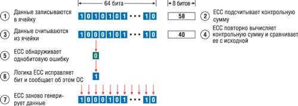
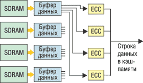
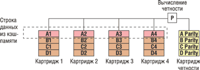
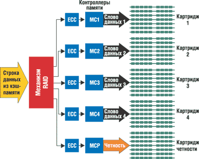

Олег Спиряев
Серверы стандартной архитектуры все чаще используются для выполнения критически важных приложений и приложений с повышенными требованиями к оперативной памяти. Известно, что компоненты оперативной памяти за последние годы становятся все более надежными, причем не только за счет усовершенствования процесса производства микросхем, но и благодаря новым технологиям защиты памяти, например, обнаружения и коррекции ошибок (Error Correction Code, ECC). Кстати, эта защита впервые была применена именно в серверах стандартной архитектуры корпорации HP (http://www.hp.com).
Однако по мере увеличения плотности этих компонентов и максимального объема оперативной памяти серверов возрастает и риск возникновения ошибок памяти. Такие ошибки могут привести к порче данных и сбою в работе сервера, что будет означать безвозвратную потерю необходимой для бизнеса информации и потери прибыли из-за простоев системы.
Для решения проблем надежности оперативной памяти HP предлагает технологию трехуровневой защиты Advanced Memory Protection, улучшающую отказоустойчивость приложений с повышенными требованиями к доступности. Клиенты HP могут выбрать систему с оптимальным для них уровнем защиты оперативной памяти - Online Spare Memory, Hot Plug Mirrored Memory и Hot Plug RAID Memory.
Ошибки памяти
Поскольку используемые в серверах модули памяти представляют собой обычные электронные запоминающие устройства, неизбежен риск возникновения различных ошибок. Как известно, в компьютерных системах обычно используется два типа устройств памяти с произвольным доступом - статическим (Static RAM) и динамическим RAM (Dynamic RAM). Микросхемы SRAM используются обычно для организации кэш-памяти, поскольку они работают очень быстро и сохраняют данные до отключения питания. Микросхемы DRAM устанавливаются как 168-контактные модули типа DIMM (Dual Inline Memory Modules). Каждый кристалл DRAM хранит данные в так называемых ячейках памяти, которые представляют собой конденсаторы, выполненные в полупроводниковой структуре кристалла. Для сохранения заряда (или обновления сохраненных данных) такие конденсаторы должны непрерывно перезаряжаться. Наличие заряда в конденсаторе интерпретируется как бит данных "1", а отсутствие заряда - как бит данных "0". Уровень электрического заряда определяется рабочим напряжением запоминающего устройства.
Если обращение к ячейке памяти происходит при операции считывания, то наличие заряда в ней определяет, будет считана "1" или "0". Например, если в системе с рабочим напряжением 5 В считанный заряд конденсатора равен 5 В, предполагается, что в нем записана единица, а если 0 В - ноль. Если напряжение конденсатора составляет немного меньше +5 В, то значение будет считываться правильно, но если заряд конденсатора изменится из-за некоторых внешних событий, то при считывании может возникнуть ошибка. Например, в серверах, выполняющих критически важные приложения, из-за таких ошибок может произойти потеря информации.
Ошибки памяти классифицируются по числу битов, которые они затрагивают (одно- и многобитовые) и по причине ошибки. Шина памяти обычно состоит из двух частей - шины данных и шины адресов. Шина данных - это дорожки, по которым реальные данные передаются к DRAM и от нее. Каждая дорожка в определенный момент времени передает только один бит данных. У современных компьютеров ширина шины данных равна 64 разрядам, т. е. за один такт шина может передавать 64 бита. Эти 64 разряда составляют слово данных ECC. Ошибка в одном разряде слова данных называется однобитовой, а в нескольких разрядах - многобитовой.
В зависимости от их природы ошибки памяти делятся на так называемые "жесткие" (аппаратные) и "мягкие". "Жесткие" ошибки связаны с неисправностью или дефектом оборудования, из-за чего устройство постоянно выдает неправильные результаты. Например, из-за дефекта ячейки памяти может случиться, что она все время будет возвращать "0", даже если в нее записано "1". Подобные аппаратные ошибки бывают вызваны дефектами кристаллов DRAM, низким качеством спайки, проблемами соединителей, разъемов и т. п. Чаще встречаются "мягкие" ошибки, возникающие случайным образом; обычно они вызываются заряженными частицами или излучением. Данные ошибки непостоянны и со временем пропадают. Ранее основной причиной случайных ошибок были альфа-частицы, но более строгий контроль качества материала, из которого делаются корпуса микросхем DRAM, позволил производителям практически ликвидировать эту причину сбоев. В настоящее время основной источник случайных ошибок в микросхемах DRAM - электрические возмущения, вызванные космическими лучами - потоками элементарных частиц высокой энергии, приходящими из космоса. Следовательно, такие ошибки не связаны с проблемами запоминающего устройства, поскольку после исправления хранящихся данных (например, путем записи в ячейку памяти) ошибки не повторяются.
Вероятность ошибок памяти увеличивается по двум причинам - роста плотности хранения в компонентах памяти и объема памяти, устанавливаемой в серверах. Дело в том, что себестоимость памяти обычно снижают путем максимального повышения разрядности микросхем. Плотная упаковка (т. е. повышение разрядности) микросхем памяти позволила резко снизить соотношение цена/емкость. Такие микросхемы, как правило, передают и получают четыре или восемь разрядов данных в каждой операции доступа.
Два параметра DRAM тесно связаны между собой - плотность хранения микросхем DRAM и рабочее напряжение системы памяти. По мере роста емкости ячеек памяти растет и плотность хранения DRAM, и чувствительность ячеек к изменению напряжения. До недавнего времени стандартные DIMM использовали напряжение 5 В, но после повышения плотности хранения DRAM рабочее напряжение уменьшили до 3,3 В, а затем и до 2,5 В - для того, чтобы память работа быстрее и потребляла меньше энергии. Но из-за увеличения плотности хранения и уменьшения рабочего напряжения возросла вероятность ошибок. А если бит данных неправильно считан и ошибка не исправлена, это приведет к сбою в работе приложения.
Поставщики ПО разрабатывают все более сложные и интенсивно использующие память приложения, которые необходимы в сфере финансов, телекоммуникаций и индустрии развлечений. В результате расширяется адресное пространство операционных систем и производители серверов увеличивают поддерживаемый объем запоминающих устройств.
Вообще говоря, существует два способа защиты от ошибок памяти - тестирование и использование технологий обнаружения/исправления ошибок. Качество процедуры тестирования зависит от источника модулей памяти. Поскольку микросхемы памяти работают быстрее и становятся все сложнее, их тестирование - это крайне трудная и дорогостоящая процедура. Производители микросхем памяти вкладывают значительные средства в системы тестирования и непрерывно совершенствуют эту процедуру, чтобы поддерживать высокое качество продукции.
Поскольку процесс производства памяти постоянно изменяется, компания HP проводит сертификацию каждой новой модели модулей памяти и его производства для устранения риска "жестких" ошибок. Корпорация также проводит тестирование каждого модуля памяти для каждой модели сервера, в которой он будет устанавливаться, включая серверы, поставляемые в настоящее время, и повторную сертификацию и тестирование модулей при переводе серверов на процессоры с увеличенной тактовой частотой. Такое тщательное тестирование позволяет HP предоставлять трехлетнюю гарантию на модули памяти с предупреждающей заменой.
Обнаружение и исправление ошибок
Конечно, проводя сертификацию фирм-производителей памяти и непрерывно тестируя их продукты, можно свести к минимуму риск возникновения большинства ошибок, связанных с процессом производства, однако эти меры никак не защищают от "мягких" ошибок. По мере увеличения емкости модулей памяти растет и вероятность возникновения "мягких" ошибок, поэтому технологии обнаружения и исправления ошибок применять просто необходимо. Ведь без этих технологий в работе критически важных приложений будут периодически происходить непредсказуемые сбои. Несмотря на средства защиты от аппаратных ошибок, сбои в запоминающем устройстве могут происходить по причинам, непосредственно не связанным с памятью. Единственная надежная защита от ошибок памяти - это использование специальных протоколов обнаружения и исправления. Некоторые из них способны только обнаруживать ошибки, а другие - идентифицировать и сразу же исправлять проблемы памяти.
Технология ECC
В 1993 г. HP первой среди фирм-производителей серверов стандартной архитектуры применила память ECC, которая значительно сокращает вероятность ошибок памяти. В настоящее время память с функцией ECC стала стандартной функцией серверов HP ProLiant. ECC работает надежнее, чем обычная проверка четности, которая обеспечивает обнаружение однобитовых ошибок, но неспособна исправлять ошибки памяти или обрабатывать многобитовые ошибки. Память ECC может обнаружить как одно-, так и многобитовые ошибки в 64-разрядном слове данных и исправить однобитовые ошибки. Обычно этот механизм называют SEC/DED (Single Error Correction/Double Error Detection - коррекция единичных и обнаружение двойных ошибок). Рассмотрим механизм работы ECC (рис. 1).
|  |
| Рис. 1. Схема обнаружения и исправления однобитовой ошибки.
|
Итак, ECC кодирует информацию в восьмиразрядные блоки, что позволяет исправлять однобитовые ошибки. При каждой записи данных в память ECC с помощью специального алгоритма вычисляет контрольные биты. Алгоритм суммирует контрольные биты, и получается контрольная сумма, которая и хранится вместе с данными. Когда данные считываются из памяти, алгоритм заново вычисляет контрольную сумму и сравнивает ее с тем значением, которое хранится вместе с данными. Если контрольные суммы одинаковы, то данные рассматриваются как правильные и операции с ними продолжаются, но если контрольные суммы различаются, это означает, что данные содержат ошибку. Тогда логика памяти ECC изолирует ошибку и сообщает о ней системе. В случае однобитовой ошибки логика памяти ECC может исправить ее и записать правильные данные, так что система продолжит работу.
Кроме обнаружения и исправления однобитовых ошибок, ECC обнаруживает (но не исправляет) ошибки в двух не идущих подряд разрядах и в четырех разрядах в одном кристалле DRAM. ECC обрабатывает такие многобитовые ошибки, генерируя немаскируемое прерывание NMI (Non-Maskable Interrupt), при получении которого система останавливает операции для того, чтобы не испортить данные. Механизм SEC/DED не позволяет обнаруживать ошибки в более чем двух разрядах; в этом случае целостность информации нарушается. В архитектуре этого типа ошибки в нескольких разрядах неустранимы и приводят к отказу системы, а сбои единичных разрядов исправляются автоматически, незаметно (прозрачно) для операционной системы и приложений.
Технология ECC обеспечивает достаточный для многих приложений уровень защиты. Стоит отметить, что эффективность подобной защиты ухудшается (частота сбоев в работе сервера может вырасти с 3 до 48%) при увеличении емкости памяти в серверах стандартной архитектуры, которое связано с расширением максимального объема оперативной памяти, поддерживаемого ОС, и доступностью относительно дешевых модулей памяти повышенной емкости.
Что такое ChipkillОдин из базовых механизмов защиты памяти - механизм Chipkill, позволяющий памяти противостоять многоразрядным ошибкам на отдельных микросхемах DRAM, в том числе сбою всех разрядов данных. В механизме Chipkill существуют два основных метода исправления ошибок, причем они могут применяться совместно. Эти методы базируются на определенном наборе микросхем и особой аппаратной архитектуре системы - их поддержка не обеспечивается простым обновлением ПО. В первом методе каждый бит данных модуля памяти размещается в отдельном "слове ECC". Иными словами, это набор разрядов данных и контрольных разрядов, в котором обнаружение и исправление ошибок обеспечивается алгоритмом ECC. Допустим, что разрядность системы памяти составляет 32 байта (или 256 разрядов). Биты ECC добавляются так, чтобы общая ширина блока (и контрольные, и биты данных) составляла 288 разрядов. Четыре слова ECC, каждое из которых состоит из 64 разрядов данных и 8 контрольных разрядов ECC, поддерживают механизм SEC/DED. Эти четыре слова ECC распределяются по DRAM-модулям. Например, если DIMM содержит модули х4 DRAM, четыре бита каждого устройства распределяются по разным словам ECC. Сбой всех четырех битов - это всего лишь четыре единичные ошибки в четырех словах ECC, и они устраняются автоматически. В данном примере механизм Chipkill поддерживается только на DIMM-модулях, состоящих из микросхем х4 DRAM. Второй метод заключается в том, что механизму ECC предоставляется больше разрядов для хранения контрольных кодов, чтобы обеспечить исправление не одного, а нескольких разрядов. При этом используются соответствующие математические алгоритмы устранения многоразрядных ошибок при определенном количестве контрольных битов ECC и битов данных. Например, 144-разрядное слово ECC, состоящее из 128 разрядов данных и 16 битов ECC, позволяет исправлять ошибки, охватывающие до 4 разрядов данных. Для исправления сбоя четырех битов необходимо, чтобы они располагались смежно, а не случайно. Соотношение разрядов ECC и разрядов данных в этом случае такое же, как и в предыдущем примере (16/128 и 8/64), однако более длинное слово ECC позволяет применить более эффективный алгоритм обнаружения и исправления ошибок. Совместное использование этих двух методов обеспечивает коррекцию по механизму Chipkill на DIMM-модулях с микросхемами х8 DRAM. Два 144-разрядных слова ECC распределяются так, чтобы на каждом DRAM в первом и втором словах ECC исправлялись по четыре разряда. Этот метод обеспечивает поддержку механизма Chipkill при использовании DIMM-модулей, состоящих из микросхем х4 DRAM и х8 DRAM.
|
Технология Advanced ECC
Для совершенствования защиты памяти в 1993 г. HP разработала технологию Advanced ECC, которая защищена патентом Error Correction System for N Bits Using Error Correcting Code Designed for Fewer than N Bits. Сегодня не только HP, но и другие фирмы-производители серверов используют это решение в своих системах. Если стандартные устройства ECC могут исправлять однобитовые ошибки при чтении из DIMM, то технология Advanced ECC способна исправлять многобитовые ошибки в одной микросхеме DRAM (табл. 1). Именно поэтому теперь возможно восстановление данных в случае отказа всей микросхемы DRAM. При использовании Advanced ECC с четырехбитовыми (х4) устройствами слово данных состоит из комбинации четырех разрядов от каждой микросхемы (рис. 2). Четыре разряда от каждой микросхемы распределяются по четырем устройствам ECC (по одному разряду для каждого устройства ECC), поэтому при ошибке в одной микросхеме возникают до четырех однобитовых ошибок.
|  | Рис. 2. Схема работы технологии Advanced ECC.
|
Поскольку алгоритм ECC предназначен как раз для исправления однобитовых ошибок, технология Advanced ECC способна исправлять многобитовые ошибки, которые произошли в одной схеме DRAM. Таким образом, Advanced ECC обеспечивает защиту от сбоя всего устройства.
Таблица 1. Сравнение технологий защиты от ошибок ECC и Advanced ECC
| Тип ошибки | ECC | Advanced ECC |
| Однобитовая | Исправляет | Исправляет |
| Двухбитовая | Обнаруживает | Исправляет или обнаруживает |
| Сбой DRAM | Обнаруживает | Исправляет |
| Сбой обнаружения ECC | - | - |
Хотя Advanced ECC обеспечивает защиту от сбоя, она исправляет многобитовые ошибки только в том случае, если они произошли в одной микросхеме DRAM. Здесь не поддерживаются такие функции, как переключение при отказе или горячая замена, которые сейчас стали обязательными для критически важных приложений, работающих круглые сутки. В результате при сбое памяти для ее замены необходимо остановить систему.
Технологии HP Advanced Memory Protection
HP стремится использовать в серверах ProLiant различные технологии, улучшающие отказоустойчивость для приложений, которым необходима высокая доступность. Например, в серверах HP ProLiant 300, 500 и 700 Series применяются одна или несколько технологий Advanced Memory Protection: Online Spare Memory, Hot Plug Mirrored Memory и Hot Plug RAID Memory. Все эти технологии оптимизированы для функциональности и приложений каждой серии серверов. Изначально технологии Advanced Memory Protection поддерживали стандартные модули DDR DIMM емкостью 256 и 512 Мбайт, 1 и 2 Гбайт.
Например, в серверах HP ProLiant ML370 G2 и G3 и DL380 G2 и G3 на системной плате размещены шесть разъемов DIMM. Эти разъемы объединены для создания трех банков памяти (A, B и C). В обычном режиме работы памяти все банки используются как доступная системная память общей емкостью 6 Гбайт (в случае 1-Гбайт модулей DIMM). Поскольку система использует чередование, DIMM-модули должны устанавливаться парами в один банк за один раз. DIMM в одном банке должны быть одинаковы по типу и емкости, иначе производительность подсистемы памяти ухудшается. Например, банк A может содержать два 512-Мбайт DIMM, а B - два 1-Гбайт DIMM.
Чередование памятиЧередование улучшает производительность памяти за счет ее разделения на несколько блоков (два, четыре и т.д.), к которым можно обращаться одновременно. В результате последовательные данные равномерно распределяются по блокам, и от системы не требуется сначала заполнить один блок, а затем - другой.
|
Режим Online Spare Memory обеспечивает более надежную защиту памяти, чем режим Standard Memory. Подобный режим выгоден компаниям, у которых не хватает ИТ-персонала, способного вручную устранить сбой, не всегда имеются запасные модули памяти и т. п. Чтобы задействовать режим Online Spare Memory, пользователь при запуске системы с помощью записанной в ПЗУ утилиты Setup Utility назначает банк C на роль Online Spare Memory (возможно также, что Online Spare Memory не будет использовать выделенный банк памяти, вместо этого банком для Online Spare Memory будет последний заполненный банк). Например, если заполнены банки A и B, то DIMM-модули в банке B будут использоваться как Online Spare Memory. Например, в серверах ProLiant ML370 G2 и DL380 G2 банк C должен быть заполнен до того, как сервер сконфигурирован для режима Online Spare Memory. Банки A и B считаются оперативной памятью общим объемом 4 Гбайт, если используются 1-Гбайт DIMM-модули. DIMM-модули в банке C должны иметь не меньшую емкость, чем модули в остальных банках. Например, если в банке A используются 512-Мбайт DIMM, а в банке B - 1-Гбайт DIMM, то в банке C нельзя установить DIMM емкостью меньше 1 Гбайт.
Если в режиме Online Spare Mode DIMM в банке A или B превысит заранее установленное пороговое значение ошибок, то загорится сигнальный светодиод перед неисправным DIMM. Ошибка будет исправлена, а данные из всего банка, который содержал неисправный DIMM, будут скопированы в банк памяти Online Spare. Банк, в котором произошел сбой, будет отключен, но сервер продолжит работу до тех пор, пока пользователь не заменит сбойный DIMM-модуль при запланированном отключении. Стоит отметить, что реализация режима Online Spare Memory в серверах ProLiant ML370 G3 и DL380 G3 не требует заполнения банка C. Здесь Online Spare Bank - это всегда последний заполненный банк.
Режимы для серверов HP ProLiant 500
Серверы HP ProLiant 500 стандартно поставляются с основной платой памяти, которая имеет восемь разъемов для DIMM-модулей общим объемом до 8 Гбайт (если в режиме Standard Memory используются 1-Гбайт DIMM). В серверах HP ProLiant ML570 G2 и ML530 G2 применяется двухуровневое чередование, а в ProLiant DL580 G2 - четырехуровневое. Если в системе используется двунаправленное чередование, то разъемы для модулей памяти организованы в четыре банка (A, B, C и D) - по два соединителя в банке. DIMM-модули устанавливаются парами в один банк за один раз, причем модули в каждом банке должны быть идентичны (одного типа и емкости), чтобы система работала правильно. Например, банк A может содержать два 1-Гбайт DIMM, а банк B - два DIMM по 512 Мбайт.
Системы с четырехуровневым чередованием организованы в два банка с четырьмя разъемами в каждом. DIMM-модули должны устанавливаться по четыре в банк. В этом случае так же обязательно, чтобы модули из одного банка были идентичными (одного типа и емкости). Стоит отметить, что для этой опции не требуется поддержка ОС - все ПО и драйверы записаны в системной BIOS.
При запуске системы с одной платой памяти с помощью записанной в ROM утилиты Setup Utility банк D указывается как Online Spare Memory, а остальные банки (A, B и C) - как системная память. Банк D на основной плате памяти всегда остается банком Online Spare, даже если установлена дополнительная плата памяти. Банк D должен быть заполнен до того, как сервер сконфигурирован для режима Online Spare Memory. В режиме Online Spare Memory сервер может поддерживать до 6 Гбайт системной памяти в банках A, B и C и 2 Гбайт Online Spare Memory в банке D. Как и в предыдущем случае, DIMM-модули в банке D должны иметь не меньшую емкость, чем модули в остальных банках. Например, если в одном банке используются 512-Мбайт DIMM, а в другом - 1-Гбайт DIMM, то в банке D нельзя установить DIMM емкостью меньше 1 Гбайт, иначе в банке Online Spare не хватит емкости для хранения всей оперативной памяти.
Если DIMM в банке A, B или C превысит заранее установленное пороговое значение ошибок, то система скопирует все данные из банка памяти, где находится сбойный DIMM-модуль, в банк памяти Online Spare. Банк, в котором произошел сбой, будет отключен, и рядом с неисправным DIMM-модулем загорится сигнальный светодиод платы памяти.
ПО HP Insight Manager может выдавать предупреждение системы на монитор или другим способом, например, на пейджер. Эта операция обеспечивает доступность сервера и надежность памяти без вмешательства, связанного с обслуживанием. Пользователь может заменить DIMM-модуль, который превысил пороговое значение ошибок, когда ему будет удобно, например, при запланированном отключении.
Серверы ProLiant ML570 G2 и DL580 G2 поддерживают две платы памяти. Это позволяет в режиме Online Spare Memory увеличить оперативную память до 16 Гбайт и обеспечить более надежную защиту по сравнению с режимом Standard Memory. Если дополнительная плата памяти установлена до загрузки сервера, то банк D на основной плате памяти можно назначить банком Online Spare с помощью записанной в ПЗУ утилиты Setup Utility.
В конфигурации с двухуровневым чередованием в режиме Online Spare Memory сервер поддерживает до 2 Гбайт памяти Online Spare в банке D основной платы и до 14 Гбайт системной памяти в остальных банках (при использовании 1-Гбайт DIMM). DIMM-модули в банке D также должны иметь не меньшую емкость, чем модули в остальных банках.
Если DIMM в одном из банков системы C превысит заранее установленное пороговое значение ошибок, система скопирует все данные из банка памяти, где находится сбойный DIMM-модуль, в банк памяти Online Spare. Банк, в котором произошел сбой, будет отключен, и рядом с неисправным модулем загорится соответствующий светодиод.
Системы с четырехуровневым чередованием имеют только по два банка памяти на плату (по четыре разъема на банк) и потому могут поддерживать переключение на банк Online Spare Memory при отказе максимум трех банков.
Режим Mirrored Memory
Mirrored Memory - это опция отказоустойчивой памяти, обеспечивающая более надежную защиту, чем Online Spare Memory, который защищает от однобитовых ошибок и выхода из строя всего модуля DRAM. А вот режим Mirrored Memory обеспечивает полную защиту от однобитовых и многобитовых ошибок при использовании одной платы памяти, поэтому он оптимален для компаний, у которых не должно быть простоев или которые не могут рисковать, ожидая запланированного простоя для замены сбойного модуля памяти.
Заказчики могут активизировать режим Mirrored Memory, используя стандартно поставляемую с сервером основную плату памяти. До двух банков памяти (С и D) можно назначить в качестве так называемой зеркалированной памяти. Серверы, работающие в режиме Mirrored Memory с одной платой памяти, поддерживают до 4 Гбайт системной памяти (и эквивалентный объем резервированной памяти) при использовании 1-Гбайт DIMM. Для активизации режима Mirrored Memory в сервере с двухуровневым чередованием банки A и B должны быть сконфигурированы идентично банкам C и D соответственно. Для активизации режима Mirrored Memory в сервере с четырехуровневым чередованием банк A должен быть сконфигурирован идентично банку B.
Одни и те же данные записываются в банки системной памяти и зеркалированной памяти, но считываются они из банков системной памяти. Если в одном из DIMM-модулей банков системной памяти произошла многобитовая ошибка или достигнут заранее определенный порог однобитовых ошибок, банки C и D автоматически назначаются системной памятью, а банки A и B - зеркалированной. Данные по-прежнему записываются в банки системной и зеркалированной памяти, но считываются только из банков системной памяти. Это обеспечивает непрерывность операций и поддерживает доступность сервера за исключением тех случаев, когда ошибка одновременно происходит в одном и том же месте в системном и зеркалированном DIMM (вероятность таких совпадений, впрочем, крайне мала). Система включает светодиод на плате памяти для DIMM, в котором произошла многобитовая ошибка.
В режиме Hot Plug Mirrored Memory дополнительная плата памяти обеспечивает полное резервирование и более надежную защиту по сравнению с режимом Online Spare Memory. Hot Plug Mirrored Memory также поддерживает горячее добавление и замену модулей для повышения доступности сервера. Горячее добавление позволяет нарастить объем памяти путем добавления DIMM-модуля в свободные разъемы, а горячая замена - заменять сбойный модуль без остановки системы. Этот режим также предназначен для тех компаний, у которых не должно быть простоев или нет возможности подождать запланированного простоя для замены сбойного модуля.
Серверы, работающие в режиме Mirrored Memory с одной платой памяти, поддерживают до 8 Гбайт системной памяти (и эквивалентный объем резервированной памяти) при использовании 1-Гбайт DIMM. Для активизации режима Mirrored Memory в сервере с двухуровневым чередованием банки A и B должны быть сконфигурированы идентично банкам C и D соответственно. Для активизации режима Hot Plug Mirrored Memory две платы должны быть сконфигурированы идентично. Одни и те же данные записываются на обе платы, но считываются только с основной.
Требования к конфигурации Hot Plug MemoryДля поддержки данного режима вторая плата памяти должна отвечать следующим требованиям:
|
Если в DIMM-модуле основной платы произошла многобитовая ошибка или превышен порог однобитовых ошибок, то данные считываются с дополнительной платы. Благодаря этому пользователь может в горячем режиме заменять сбойные DIMM-модули основной платы без остановки сервера.
В том случае, если соответствующий светодиод (Ready to Hot Plug) платы памяти светится зеленым светом, можно безопасно удалить одну из плат памяти, соблюдая следующие ограничения:
- если не было ошибок, то можно снять любую плату;
- если в одном из банков памяти произошел сбой, то можно снять только ту плату, где находится сбойный банк;
- если в обеих платах есть сбойные банки, то платы заменять нельзя.
Хотя вероятность последнего случая крайне мала, соблюдение данного ограничения защищает от такой рискованной ситуации, когда в сервере есть только одна плата, в которой происходили многобитовые ошибки. В таком случае сервер надо выключить и устранить сбои.
Хотя в серверах ProLiant 500 поддерживается функция горячего добавления DIMM-модулей в свободные разъемы для расширения объема памяти, для ее реального использования требуется, чтобы и операционная система могла обнаруживать установку дополнительной памяти.
Особенности защиты в серверах ProLiant 700
Серверы ProLiant 700 стали первыми в индустрии компьютерами, оперативная память которых имеет функциональность Hot Plug RAID Memory. Именно она обеспечивает непрерывную работу подсистемы памяти даже в случае полного выхода из строя запоминающего устройства. В данном случае RAID расшифровывается как Redundant Array of Industry-standard DIMMs (резервированный массив стандартных DIMM-модулей). Не стоит путать эту аббревиатуру с резервированным массивом независимых дисков (Redundant Array of Independent Disks, RAID), используемых в системах хранения. Тем не менее концепция HP Hot Plug RAID чем-то схожа с технологией RAID Level 4 для дисковых систем хранения, хотя имеются и некоторые существенные отличия.
Общность концепции Hot Plug RAID Memory с RAID Level 4 заключается в том, что при записи данных вычисляется контрольная сумма четности для всей строки данных кэш-памяти и эта сумма записывается в специальный картридж четности (рис. 3). Далее указанная контрольная сумма четности проверяется при операции чтения. Вообще говоря, на этом сходство HP Hot Plug RAID Memory и дисковых массивов RAID заканчивается. В Hot Plug RAID Memory отсутствует механическое запаздывание поиска и запаздывание из-за вращения диска, которые остаются недостатком дисковых массивов. Дисковые массивы используют одну шину для последовательной записи расщепленных данных на несколько массивов, а Hot Plug RAID Memory использует параллельные соединения типа "точка-точка" для одновременной записи данных на несколько картриджей памяти. Кроме того, в Hot Plug RAID Memory нет узкого места записи, которое обычно снижает производительность дисковых массивов RAID. RAID-контроллер дискового массива перед завершением записи обычно считывает существующее значение четности. Если четность хранится на выделенном диске, то он становится узким местом системы. Поскольку обычно Hot Plug RAID Memory работает со всей строкой данных из кэш-памяти, то не нужно перед записью считывать существующее значение четности.
|  | Рис. 3. Механизм HP Hot Plug RAID Memory.
|
Рассмотрим принципы работы HP Hot Plug RAID Memory. Серверы с HP Hot Plug RAID Memory используют пять контроллеров памяти для управления пятью картриджами памяти, каждый из которых вмещает до восьми стандартных DIMM-модулей (рис. 4). Когда контроллерам памяти нужно записать данные в память, они разбивают данные на четыре блока и записывают их в четыре из пяти картриджей памяти. Механизм RAID вычисляет контрольную сумму четности, которая записывается в пятом картридже. С четырьмя картриджами данных и одним картриджем четности обеспечивается полная отказоустойчивость подсистемы данных. Если данные из любого DIMM-модуля неправильные или один из картриджей удален, то данные можно восстановить по остальным четырем картриджам.
|  | Рис. 4. Процесс записи в Hot Plug RAID Memory.
|
Резервирование HP Hot Plug RAID Memory позволяет в горячем режиме заменять, добавлять и обновлять модули памяти без отключения сервера. Горячая замена отказавшего модуля выполняется без прерывания работы системы. Для замены в горячем режиме не требуется специальный драйвер или поддержка этой операции в ОС (серверы стандартно поддерживают горячую замену независимо от ОС). Горячее добавление и обновление позволяют наращивать доступную память сервера: при горячем добавлении в свободные разъемы устанавливаются дополнительные DIMM-модули, а при горячем обновлении "старые" модули заменяются на модули большей емкости.
Для использования горячего добавления и обновления требуется, чтобы ОС могла обнаружить увеличение памяти. Современные версии Microsoft Windows Advanced Server, Windows Data Center, Novell NetWare и SCO UnixWare поддерживают эти функции в серверах HP ProLiant 700, при этом HP совместно с разработчиками ОС работает над введением поддержки этих функций в других релизах ОС.
Когда операция завершена, HP Hot Plug RAID Memory автоматически перераспределяет данные по всем картриджам памяти. По данным HP, перераспределение 4 Гбайт памяти выполняется менее чем за полминуты - это совсем небольшая плата за повышение отказоустойчивости и защиту от сбоев памяти.
В табл. 2 приведены сравнительные характеристики и конкурентные преимущества технологий HP Advanced Memory Protection.
Таблица 2. Сравнение механизмов защиты Advanced Memory Protection
| HP Advanced Memory | HP Online Spare Memory | HP Hot Plug Mirrored Memory | HP Hot Plug RAID Memory | |
| Защита от сбоев устройств | Да | Да | Да | Да |
| Стандартные DIMM | Да | Да | Да | Да |
| Hot Plug | Нет | Нет | Да | Да |
| Замена сбойных DIMM | Offline | Offline | Online | Online |
| Расширение памяти | Offline | Offline | Online | Online |
Можно отметить, что совокупность технологий, предлагаемых HP для защиты памяти, позволяет покупателям выбрать системы с оптимальным для них уровнем доступности для повышения надежности всего решения. Тем не менее технология HP Hot Plug RAID Memory обеспечивает максимальную доступность и оптимальна для компаний, которые используют серверы стандартной архитектуры с большой памятью для выполнения приложений в круглосуточном режиме. Эта технология позволяет подсистеме памяти работать непрерывно даже в случае полного выхода из строя устройства памяти и выполнять в горячем режиме замену, добавление и обновление DIMM-модулей.